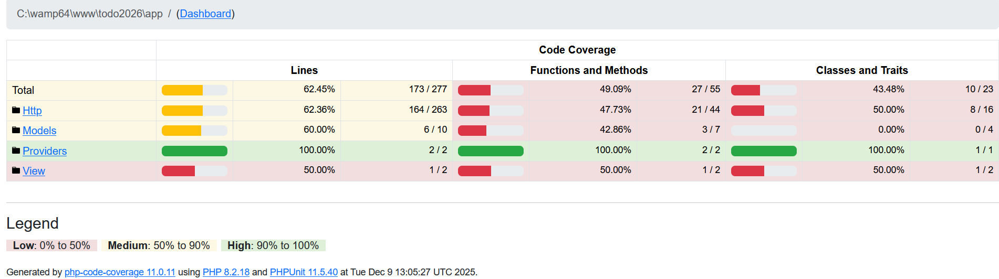
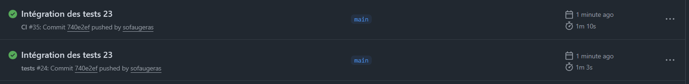

CI - Tests unitaires 🧪⚓︎
L’exécution de tests unitaires et d’intégrations est au coeur de la démarche DevOps et d’intégration continue. C’est eux qui vont permettre de détecter les anomalies dans les développements réalisés. Github Actions, si un ou plusieurs tests sont en erreur, va fournir les rapports détaillés permettant d’identifier l’origine de l’erreur, et va signaler que la tâche est en erreur. Cela peut par exemple empêcher un merge de se réaliser dans Github.
- name: Run tests with coverage
env:
XDEBUG_MODE: coverage
run: php artisan test --coverage --min=80
🎯 Objectifs pédagogiques
- Comprendre la structure des tests Unit et Feature dans Laravel.
- Écrire, exécuter et interpréter des tests automatisés.
- Intégrer les tests dans une pipeline d’intégration continue (CI).
- Mesurer la couverture de code et fixer un seuil minimal de qualité.
1. Initialisation de l’environnement de test 🏗️⚓︎
Crée un environnement dédié aux tests.
cp .env .env.testing
php artisan key:generate
▶️ Configure .env.testing ⚙️
D'abord la base de données de Test :
CREATE DATABASE todo_test;
CREATE USER 'laravel_test'@'localhost' IDENTIFIED BY 'secret';
GRANT ALL PRIVILEGES ON todo_test.* TO 'laravel_test'@'localhost';
FLUSH PRIVILEGES;
DB_CONNECTION=mysql
DB_HOST=127.0.0.1
DB_PORT=3306
DB_DATABASE=todo_test
DB_USERNAME=laravel_test
DB_PASSWORD=secret
Fix problèm 🪲 sqlite
Par défaut, Laravel utilise SQLite pour l’exécution des tests. Cette base, entièrement en mémoire, est très performante et particulièrement adaptée aux tests unitaires. Cependant, SQLite gère mal certaines fonctionnalités avancées, notamment les clés primaires composites que nous avons mises en place dans nos migrations.
Pour garantir un comportement cohérent entre l'environnement de développement, l'environnement de test et l'environnement de production, nous faisons donc le choix d’utiliser MySQL également pour les tests.
Dans la continuité, nous provisionnerons un service MySQL via Docker au sein de GitHub Actions afin d’exécuter automatiquement la suite de tests dans un environnement reproductible et compatible avec nos contraintes de schéma.
dans le fichier phpunit.xml à la racine du projet
<!--
<server name="DB_CONNECTION" value="sqlite"/>
<server name="DB_DATABASE" value=":memory:"/>
-->
<server name="DB_CONNECTION" value="mysql"/>
<server name="DB_DATABASE" value="todo_test"/>
<server name="DB_USERNAME" value="laravel_test"/>
<server name="DB_PASSWORD" value="secret"/>
2. Premier test “Smoke test” 🧩⚓︎
Crée un test pour vérifier que la page d’accueil est accessible.
php artisan make:test AccueilTest
Cela créé un nouveau répertoire tests, modifions à présent tests/Feature/AccueilTest.php :
<?php
public function test_invite_est_redirige_depuis_accueil_vers_login()
{
$response = $this->get('/');
$response->assertRedirect(route('login'));
}
public function test_utilisateur_auth_peut_acceder_a_l_accueil()
{
$user = User::factory()->create();
$response = $this->actingAs($user)
->followingRedirects()
->get('/');
$response->assertOk();
// On vérifiera qu'on voit bien le texte "Ma Todo List" dans la page
$response->assertSee('Ma Todo List');
}
assertRedirect(route('login'))montre le comportement pour un invité.actingAs($user)+followingRedirects()illustre le scénario d’un utilisateur authentifié.- L’assertion porte sur un texte réel de la vue, pas sur le nom de la route.
🏃 Lançons les tests :
php artisan test
Fix problém 🪲
- Mettre en commentaire le contenu de exampleTest.php
- Réparer le test d'authentification
FAILED Tests\Feature\Auth\AuthenticationTest > users can authenticate using the login screen
Failed asserting that two strings are equal.
--- Expected
+++ Actual
@@ @@
-'http://localhost/dashboard'
+'http://localhost'
+++ Actual
@@ @@
-'http://localhost/dashboard'
+'http://localhost'
@@ @@
-'http://localhost/dashboard'
+'http://localhost'
-'http://localhost/dashboard'
+'http://localhost'
+'http://localhost'
résultats
(base) PS C:\wamp64\www\todo2026> php artisan test
PASS Tests\Unit\ExampleTest
✓ that true is true 0.02s
PASS Tests\Feature\AccueilTest
✓ invite est redirige depuis accueil vers login 0.63s
✓ utilisateur auth peut acceder a l accueil 0.58s
PASS Tests\Feature\Auth\AuthenticationTest
✓ login screen can be rendered 3.22s
✓ users can authenticate using the login screen 0.17s
✓ users can not authenticate with invalid password 0.29s
✓ users can logout 0.10s
PASS Tests\Feature\Auth\EmailVerificationTest
✓ email verification screen can be rendered 0.14s
✓ email can be verified 0.08s
✓ email is not verified with invalid hash 0.10s
PASS Tests\Feature\Auth\PasswordConfirmationTest
✓ confirm password screen can be rendered 0.12s
✓ password can be confirmed 0.07s
✓ password is not confirmed with invalid password 0.30s
PASS Tests\Feature\Auth\PasswordResetTest
✓ reset password link screen can be rendered 0.07s
✓ reset password link can be requested 0.27s
✓ reset password screen can be rendered 0.38s
✓ password can be reset with valid token 0.33s
PASS Tests\Feature\Auth\PasswordUpdateTest
✓ password can be updated 0.08s
✓ correct password must be provided to update password 0.08s
PASS Tests\Feature\Auth\RegistrationTest
✓ registration screen can be rendered 0.07s
✓ new users can register 0.07s
PASS Tests\Feature\ProfileTest
✓ profile page is displayed 0.19s
✓ profile information can be updated 0.07s
✓ email verification status is unchanged when the email address is unchanged 0.08s
✓ user can delete their account 0.08s
✓ correct password must be provided to delete account 0.10s
Tests: 26 passed (64 assertions)
Duration: 8.40s
3. Les factories Eloquent 🏭⚓︎
🧩 Qu’est-ce qu’une Factory Laravel ?
Une factory est un outil fourni par Laravel pour générer automatiquement des données de test réalistes.
Elle permet de créer facilement :
- des objets Eloquent cohérents (User, Todo, Liste, etc.),
- avec des valeurs aléatoires mais crédibles (texte, dates, booléens…),
- et surtout sans écrire manuellement chaque champ.
Les factories sont essentielles pour les tests, car elles permettent :
- de simplifier la création d’entrées en base,
- d’éviter de dupliquer du code,
- d’isoler les tests (chaque test crée ses propres données),
et d’obtenir des tests précis, reproductibles et rapides.
Les fichiers de factories se trouvent dans le dossier database/factories/
note : Laravel fournit déjà une factory pour User : UserFactory.php.
3.1. Vérifier la factory User 🧑💻⚓︎
Ouvre le fichier suivant : database/factories/UserFactory.php
Tu dois y trouver une méthode definition() qui ressemble à ceci :
<?php
public function definition(): array
{
return [
'name' => fake()->name(),
'email' => fake()->unique()->safeEmail(),
'email_verified_at' => now(),
'password' => static::$password ??= Hash::make('password'),
'remember_token' => Str::random(10),
];
}
L’important pour nous est :
👉 User::factory()->create() permet de créer facilement un utilisateur de test valide.
3.2. Créer une factory pour Listes 📂⚓︎
On veut pouvoir générer des listes de Todos pour les tests (ex. “Maison”, “Travail”, etc.).
Crée la factory : php artisan make:factory ListesFactory --model=Listes
Puis complète database/factories/ListesFactory.php :
<?php
use App\Models\Listes;
use Illuminate\Database\Eloquent\Factories\Factory;
class ListesFactory extends Factory
{
protected $model = Listes::class;
public function definition(): array
{
return [
'titre' => fake()->words(2, true), // par ex. "Maison", "Bureau perso"
];
}
}
💡 Explication ListeFactory
Ici, on utilise fake()->words(2, true) pour générer un nom de liste avec 2 mots.
À partir de là, un simple Listes::factory()->create() dans un test insérera une ligne dans la table listes avec un champ titre cohérent.
A faire
✅ Créer une factory pour Todos (sans relations)
<?php
namespace Database\Factories;
use Illuminate\Database\Eloquent\Factories\Factory;
use App\Models\Todos;
use App\Models\Listes;
use App\Models\User;
/**
* @extends \Illuminate\Database\Eloquent\Factories\Factory<\App\Models\Todos>
*/
class TodosFactory extends Factory
{
protected $model = Todos::class;
public function definition(): array
{
return [
'texte' => fake()->sentence(3),
'termine' => false,
'important' => false,
'date_fin' => null,
'listes_id' => Listes::factory(), // crée une Liste associée
'user_id' => User::factory(), // crée un User associé
];
}
}
Avec cette factory, on peut déjà écrire :
<?php
$todos = Todos::factory()->create();
todos avec :
- un
texteréaliste, termine = false,important = false,- les FK
listes_idetuser_idànull(non associées pour l’instant).
C’est suffisant pour des premiers tests sur les attributs du modèle Todo.
3.3. Vérifier le bon fonctionnement des factories 🎢⚓︎
Tinker est une console interactive fournie par Laravel, basée sur PsySH, qui permet d’exécuter du code PHP en direct au sein de ton application.
C’est un outil extrêmement pratique pour :
- tester rapidement des modèles Eloquent,
- manipuler la base de données depuis le shell,
- vérifier le fonctionnement d’une factory,
- expérimenter un morceau de logique métier,
- déboguer un comportement sans écrire de route ni de test.
▶️ Ouvrir Tinker
Dans ton terminal (à la racine du projet) : php artisan tinker
Tu obtiens alors une console interactive :
Psy Shell v0.11.8 (PHP 8.2 …)
>>>
✔️ Tester une factory
> App\Models\Listes::factory()->create();
= App\Models\Listes {#6211
titre: "eos ut",
updated_at: "2025-12-06 13:09:32",
created_at: "2025-12-06 13:09:32",
id: 4,
}
Résultat : un nouvel enregistrement todos est inséré dans la base de développement.
Fix problème 🪲
- penser à ajouter
use HasFactory;dans le model de Todos - Vider le cache Laravel
php artisan optimize:clear
composer dump-autoload
3.4. Todo lié à une Liste et à un User 🔗⚓︎
Pour des tests plus complets (relations Eloquent), on peut demander à la factory Todo de créer automatiquement une Liste et un User associés.
code TodoFactory
<?php
use App\Models\Todos;
use App\Models\Listes;
use App\Models\User;
use Illuminate\Database\Eloquent\Factories\Factory;
class TodosFactory extends Factory
{
protected $model = Todos::class;
public function definition(): array
{
return [
'texte' => fake()->sentence(3),
'termine' => false,
'important' => false,
'date_fin' => null,
'listes_id' => Listes::factory(), // crée une Liste associée
'user_id' => User::factory(), // crée un User associé
];
}
}
En configurant listes_id et user_id avec Liste::factory() et User::factory(), on obtient un comportement très puissant :
<?php
$todo = Todos::factory()->create();
réalise en réalité :
- création d’un
Userde test, - création d’une
Listesde test, - création du
Todoslié à ces deux enregistrements.
Cela simplifie énormément les tests qui portent à la fois sur Todos et sur ses relations (ex. todos->listes, todos->user).
✔️ Créer un utilisateur
> App\Models\User::factory()->create();
= App\Models\User {#6632
name: "Diane Lambert",
email: "pauline27@example.net",
email_verified_at: "2025-12-06 13:14:50",
#password: "$2y$12$mynJ8kscphRfl1KCdRRVR.XS8hKU0dxzQvaBkTWWc8P9TkgonEgEq",
#remember_token: "nNiqZwe2AN",
updated_at: "2025-12-06 13:14:51",
created_at: "2025-12-06 13:14:51",
id: 3,
}
✔️ Tester la factory Todos
> App\Models\Todos::factory()->create();
= App\Models\Todos {#5520
texte: "Ut rerum praesentium fugit.",
termine: false,
important: false,
date_fin: null,
listes_id: 5,
user_id: 4,
updated_at: "2025-12-06 13:22:15",
created_at: "2025-12-06 13:22:15",
id: 9,
}
✔️ Lister les enregistrements existants : App\Models\Todos::all();
4. Tests Unitaires : modèle Eloquent 🧱⚓︎
Dans cette étape, nous allons vérifier le comportement du modèle Todos à l’aide de tests unitaires :
- relations
Todos → ListesetTodos → User, - valeurs par défaut de certains attributs (
termine,important, etc.).
L’objectif est de valider le modèle sans passer par les routes ni les vues.
4.1 Création du test de modèle 🧪⚓︎
Génère un test unitaire dédié au modèle Todos :
php artisan make:test TodosModelTest --unit
tests/Unit/TodosModelTest.php
Modifier l’en-tête du fichier pour qu’il étende bien la classe de test Laravel (et pas le TestCase brut de PHPUnit), afin de pouvoir utiliser les factories et la base de données de test.
<?php
namespace Tests\Unit;
use Tests\TestCase;
use Illuminate\Foundation\Testing\RefreshDatabase;
use App\Models\Todos;
use App\Models\Listes;
use App\Models\User;
class TodosModelTest extends TestCase
{
use RefreshDatabase;
// Les tests viendront ici
}
💡 Pourquoi utiliser Tests\TestCase et RefreshDatabase ?
Tests\TestCasecharge le contexte Laravel complet (config, Eloquent, etc.) dans les tests, même dans tests/Unit.RefreshDatabaserelance les migrations pour chaque test afin de garantir une base de test propre (pas de pollution entre tests).
4.2 Tester la relation Todos → Listes 🔗⚓︎
Ton modèle Todos déclare une relation :
<?php
public function listes(): BelongsTo
{
return $this->belongsTo(Listes::class)->withDefault();
}
Dans TodosModelTest :
<?php
public function test_un_todos_appartient_a_une_liste()
{
// Arrange : création d'une liste
$liste = Listes::factory()->create();
// Act : création d'un Todos lié à cette liste
$todo = Todos::factory()->for($liste, 'listes')->create();
// Assert : la relation renvoie bien la bonne liste
$this->assertTrue($todo->listes->is($liste));
}
💡 Détail sur for($liste, 'listes')
Listes::factory()->create()crée une ligne dans la table listes.Todos::factory()->for($liste, 'listes')->create()demande à Laravel de remplir la clé étrangère correspondant à la relation listes dans le modèle Todos.- L’assertion
is()vérifie que$todo->listeset$listereprésentent le même enregistrement.
🏃 Relancer les tests : php artisan test
A faire
Tester la relation Todos → User 👤
<?php
public function test_un_todos_appartient_a_un_utilisateur()
{
// Arrange : création d'un utilisateur
$user = User::factory()->create();
// Act : création d'un Todos lié à cet utilisateur
$todo = Todos::factory()->for($user, 'user')->create();
// Assert : la relation renvoie bien le bon utilisateur
$this->assertTrue($todo->user->is($user));
}
💡 Pourquoi tester les relations ?
Ces tests garantissent que :
- les clés étrangères (
listes_id, user_id)sont correctement utilisées, - les méthodes
listes()etuser()renvoient bien les modèles attendus.
En cas de renommage de colonne, de modèle ou de relation, ces tests serviront de garde-fous.
A faire
Tester les valeurs par défaut (termine, important) ✅
<?php
public function test_un_todos_est_non_termine_et_non_important_par_defaut()
{
// Act : création d'un Todos sans préciser termine/important
$todo = Todos::factory()->create();
// Assert : les valeurs par défaut sont respectées
$this->assertFalse($todo->termine);
$this->assertFalse($todo->important);
}
5.Tests de validation 🧮⚓︎
Nous allons maintenant écrire des tests de validation pour le formulaire d’ajout d’un Todo.
🎯 Objectifs"
- Vérifier que certains champs sont obligatoires (
textenotamment). - Vérifier que certains champs respectent des contraintes (longueur minimale, format de date…).
- Vérifier qu’un Todo valide est bien créé en base.
5.1 Préparer un test dédié 📄⚓︎
Crée un test de type Feature php artisan make:test TodosValidationTest
Cela créé un fichier dans tests/Feature/TodosValidationTest.php, modifier le code ainsi :
<?php
namespace Tests\Feature;
use App\Models\User;
use App\Models\Listes;
use App\Models\Todos;
use Illuminate\Foundation\Testing\RefreshDatabase;
use Tests\TestCase;
class TodosValidationTest extends TestCase
{
use RefreshDatabase;
/**
* Méthode utilitaire pour poster un Todo avec des données par défaut
*/
private function postTodo(array $overrides = [])
{
$user = User::factory()->create();
$this->actingAs($user);
$liste = Listes::factory()->create();
$data = array_merge([
'texte' => 'Acheter du café',
'date_fin' => now()->addDay()->format('Y-m-d\TH:i'),
'priority' => 0, // bouton radio importance
'categories' => [], // tableau de catégories (checkbox)
'liste' => $liste->id, // correspond à $request->input('liste')
], $overrides);
return $this->post('/action/add', $data);
}
}
💡 Pourquoi une méthode postTodo() ?
Cette méthode permet de :
- centralise la construction d’un jeu de données valide,
- permet d’écrire des tests plus courts en ne modifiant que les champs à tester,
- garantit que tous les autres champs restent cohérents (liste existante, user connecté, etc.).
5.2 texte est obligatoire ✏️⚓︎
Premier cas : le champ texte doit être obligatoire.
<?php
public function test_texte_est_obligatoire()
{
$response = $this->postTodo(['texte' => '']);
$response->assertSessionHasErrors('texte');
$this->assertDatabaseCount('todos', 0);
}
question "💡 Comportement attendu côté contrôleur ?"
Dans ton contrôleur qui traite /action/add, tu dois avoir quelque chose comme :
<?php
$validated = $request->validate([
'texte' => ['required', 'string'],
// autres règles…
]);
- si
texteest vide, Laravel renvoie une erreur de validation sur ce champ, - aucun
Todosn’est créé en base.
mais
FAIL Tests\Feature\TodosValidationTest
⨯ texte est obligatoire 0.11s
───────────────────────────────────────────────────────────────────────────────────────────────────────────────────────────────────
FAILED Tests\Feature\TodosValidationTest > texte est obligatoire
Session is missing expected key [errors].
Failed asserting that false is true.
at tests\Feature\TodosValidationTest.php:40
36▕ public function test_texte_est_obligatoire()
37▕ {
38▕ $response = $this->postTodo(['texte' => '']);
39▕
➜ 40▕ $response->assertSessionHasErrors('texte');
41▕ $this->assertDatabaseCount('todos', 0);
42▕ }
43▕ }
44▕
Il faut adapter le test au contrôleur actuel ! Le contrôleur, en cas de texte vide, ne renvoie pas d’errors bag, mais :
- déclenche une ValidationException,
- la catch renvoie un
redirect()->route('todo.liste')->with('message', '...').
Donc le test doit vérifier :
- la redirection vers la route,
- la présence du message en session,
- l’absence de nouvelle ligne dans todos.
<?php
public function test_texte_est_obligatoire()
{
$response = $this->postTodo(['texte' => '']);
$response->assertRedirect(route('todo.liste'));
$response->assertSessionHas('message', "Veuillez saisir un ToDo d'une longueur max de 255 caractères");
$this->assertDatabaseCount('todos', 0);
}
PASS Tests\Feature\TodosValidationTest
✓ texte est obligatoire 0.11s
Tests: 28 passed (69 assertions)
Duration: 6.48s
🚩 Mais quelle est la bonne pratique ?
A faire : longueur minimale
Actuellement, la règle est 'texte' => 'required|string|max:255',
▶️ La règle doit à présent être d'avoir une contrainte supplémentaire, une longueur minimale de 3 caractères
- Implémenter cette règle
- Faites en sorte qu'elle soit bien prise en compte dans votre interface
- Tester cette règle dans les features de tests.
dans le controleur :
<?php
$request->validate([
'texte' => 'required|string|min:3|max:255',
]);
<?php
public function test_texte_doit_avoir_une_longueur_minimale()
{
$response = $this->postTodo(['texte' => 'ab']); // 2 caractères
$response->assertSessionHasErrors('texte');
$this->assertDatabaseCount('todos', 0);
}
Exécution ciblée des tests de validation ▶️
Pour exécuter uniquement cette classe de tests :
php artisan test --filter=TodosValidationTest
5.3 Cas nominal ➕✔️⚓︎
Il est important de tester aussi le scénario heureux 😃 :
quand toutes les données sont valides, le Todo doit être créé.
<?php
public function test_un_todos_valide_est_cree()
{
$response = $this->postTodo(); // toutes les valeurs par défaut sont valides
$response->assertSessionDoesntHaveErrors();
$response->assertRedirect(); // ou ->assertRedirect('/'); selon ton contrôleur
$this->assertDatabaseCount('todos', 1);
$this->assertDatabaseHas('todos', [
'texte' => 'Acheter du café',
'termine' => 0,
'important' => 0,
]);
}
💡 Pourquoi ce test est essentiel ?
- Il vérifie que la création fonctionne en cas de données valides.
- Il sert de référence pour les autres tests de validation : ils ne doivent empêcher que les données invalides.
- En cas de modification ultérieure du contrôleur, ce test permet de détecter une régression sur le CAS NOMINAL.
Available assertions 📕
Il existe de nombreuses assertions différentes. Elles sont disponible dans la documentation de Laravel.
6. Gestion de la base de données pendant les tests 🧰⚓︎
Jusqu’ici, nous avons écrit des tests qui créent des utilisateurs, des listes et des todos à l’aide des factories.
Il est maintenant important de bien comprendre comment Laravel gère la base de données pendant les tests.
🎯 Objectifs
- Comprendre comment isoler chaque test (pas de pollution entre tests).
- Savoir sur quelle base s’exécutent les tests (
.env.testing). - Utiliser les assertions
assertDatabaseHas,assertDatabaseMissing,assertDatabaseCount.
6.1 Le trait RefreshDatabase 🔄⚓︎
documentation Laravel sur database-testing
Laravel fournit le trait use Illuminate\Foundation\Testing\RefreshDatabase;
Ce trait, utilisé dans une classe de test, garantit que :
- les migrations sont exécutées pour la base de test,
- la base est remise à zéro entre les tests (soit par migrate:fresh, soit par transactions selon le driver).
Exemple (déjà utilisé dans tes tests) :
<?php
use Tests\TestCase;
use Illuminate\Foundation\Testing\RefreshDatabase;
class TodosValidationTest extends TestCase
{
use RefreshDatabase;
// ...
}
💡 Que fait RefreshDatabase exactement ?
- Avant le premier test, Laravel exécute
php artisan migratesur la connexion de test. - Entre les tests, il remet la base dans un état propre (
rollbackoumigrate:freshselon le driver). - Cela permet de s’assurer que chaque test est indépendant des autres : aucun enregistrement laissé par un test ne doit influencer un autre test.
6.2 Quelle base est utilisée pour les tests ? 🗄️⚓︎
Laravel choisit la base de données de test via Le fichier .env.testing ou éventuellement des variables dans phpunit.xml
Dans ton cas, tu as configuré une base MySQL dédiée, par exemple :
dans .env.testing
APP_ENV=testing
APP_DEBUG=true
DB_CONNECTION=mysql
DB_HOST=127.0.0.1
DB_PORT=3306
DB_DATABASE=todo_test
DB_USERNAME=laravel_test
DB_PASSWORD=secret
Pendant les tests, on ne touche jamais à la base de développement (todo2025) :
tout se passe dans la base todo_test.
💡 Comment vérifier que Laravel utilise bien la bonne base ?
- Tu peux temporairement ajouter un test “de debug” :
<?php
public function test_voir_la_connexion_de_test() {
$this->assertSame('mysql', config('database.default'));
$this->assertSame('todo_test', config('database.connections.mysql.database'));
}
6.3 Exécuter les tests ▶️⚓︎
En général, tu n’as pas besoin de te soucier manuellement des migrations : RefreshDatabase s’en charge.
Mais si tu modifies les migrations ou la structure de la base, tu peux forcer un reset complet :
php artisan migrate:fresh --env=testing
php artisan test
💡 Quand utiliser migrate:fresh --env=testing ?
- Quand tu as modifié une migration existante (ajout/suppression de colonnes).
- Quand tu veux repartir d’une base de test complètement propre.
- À éviter en production, bien sûr : cela supprime toutes les tables avant de les recréer.
7. Tests d’authentification 🔐⚓︎
Laravel génère automatiquement une série complète de tests d’authentification et de sécurité, via Breeze ou Jetstream.
Ces tests couvrent déjà toutes les fonctionnalités essentielles :
- affichage des formulaires de connexion / inscription,
- validation des identifiants,
- impossibilité de se connecter avec un mot de passe incorrect,
- confirmation de mot de passe,
- mise à jour du mot de passe,
- réinitialisation de mot de passe,
- vérification d’e-mail,
- déconnexion de l’utilisateur.
Ces tests se trouvent dans tests/Feature/Auth/
Pourquoi conserver ces tests ? 🛡️
Ces tests assurent automatiquement :
- que l’authentification reste fonctionnelle après une mise à jour,
- que les étudiants ne cassent pas la sécurité en modifiant une vue ou une route,
- que chaque changement sur les routes ou les middlewares continue de respecter les règles Laravel (auth, verified, etc.).
- Ils constituent une base solide pour éviter les régressions pendant le développement.
7.1 Tests d’accès aux routes protégées (middleware auth) 🔒⚓︎
Il peut être utile d’ajouter un seul test d'exemple dans ton TP pour illustrer comment vérifier qu’une route est bien protégée par auth.
<?php
public function test_invite_ne_peut_pas_acceder_aux_todos()
{
$response = $this->get('/todos');
$response->assertRedirect(route('login'));
}
7.2 Tests liés à l'autorisation (Policies) 🧭⚓︎
Lorsque tu ajoutes une policy pour restreindre l’accès aux Todos :
- un utilisateur ne peut modifier que ses propres Todos,
- un utilisateur ne peut supprimer que ses Todos, etc.,
tu peux tester ces règles simplement avec :
<?php
public function test_un_utilisateur_ne_peut_pas_modifier_le_todo_d_un_autre()
{
$a = User::factory()->create();
$b = User::factory()->create();
$todo = Todos::factory()->for($a, 'user')->create();
$response = $this->actingAs($b)->post("/todos/{$todo->id}/edit", [
'texte' => 'H4ck',
]);
$response->assertForbidden();
}
Laravel renverra automatiquement 403 Forbidden si la policy refuse l’accès.
8. Intégration dans GitHub Actions ⚙️⚓︎
🎯 Objectif : exécuter automatiquement les tests Laravel à chaque push ou pull request sur GitHub, avec un seuil de couverture minimal.
🔑 Idée clé :
- En local, tu peux utiliser MySQL (
todo_test). - En CI GitHub Actions, on va utiliser SQLite en mémoire (plus simple, plus rapide), en écrivant un
.env.testingspécifique dans le workflow. - On active la couverture de tests pour mesurer la part du code réellement exécutée par les tests, et on impose un seuil minimal (80 %).
8.1. Créer le workflow tests.yml 🧾⚓︎
Dans ton projet, crée un fichier :
.github/workflows/tests.yml
Avec le contenu suivant :
name: tests
on:
push:
pull_request:
jobs:
laravel-tests:
runs-on: ubuntu-latest
services:
mysql:
image: mysql:8.0
env:
MYSQL_ROOT_PASSWORD: root
MYSQL_DATABASE: todo_test
MYSQL_USER: laravel_test
MYSQL_PASSWORD: secret
ports:
- 3306:3306
options: >-
--health-cmd="mysqladmin ping -h 127.0.0.1 -uroot -proot"
--health-interval=10s
--health-timeout=5s
--health-retries=10
steps:
- name: Checkout code
uses: actions/checkout@v4
- name: Setup PHP
uses: shivammathur/setup-php@v2
with:
php-version: '8.3'
extensions: mbstring, dom, pdo_mysql
coverage: xdebug
- name: Install PHP dependencies
run: composer install --no-interaction --prefer-dist
# ⬇️ Partie frontend / Vite : création du manifest.json
- name: Setup Node
uses: actions/setup-node@v4
with:
node-version: '20'
- name: Install frontend dependencies
run: npm ci
- name: Build assets
run: npm run build
# ⬇️ On aligne l'environnement de la CI sur ton env de test local
- name: Prepare environment file
run: cp .env.testing .env
- name: Run migrations
run: php artisan migrate --force
- name: Run tests with coverage
env:
XDEBUG_MODE: coverage
run: php artisan test --coverage --min=80
8.2. Mesurer la couverture en local 📊⚓︎
Définition 💡
La couverture de code est une métrique qui peut vous permettre de comprendre la part testée de votre source. Cette métrique est très utile, car elle peut vous aider à évaluer la qualité de votre suite de tests.
phpunit regarde quelles lignes ont été "utilisées" dans le code quand on a lancé les tests unitaires. Ensuite en fonction du nombre de lignes utilisées par rapport au nombre de lignes total du fichier, phpunit calcule un taux de couverture pour le fichier.
Dans notre CI :
- le job GitHub Actions réussit si la couverture est ≥ 80 %
- il échoue si la couverture descend sous 80 %.
En local, tu peux également mesurer la couverture php artisan test --coverage --min=80 --coverage-html ./report
L'option --coverage-html ./report permet de générer un rapport, mesurant la couverture de notre application.

😥 Ici le taux est de \(62.45%\) donc très largement en dessous du seuil de --coverage --min=80. Donc si on laisse ce taux dans la CI, l'échec est assuré !
Taux de couverture
▶️ Modifier le fichier tests.yml pour vous assurer que le taux de couverture de 80% ne soit pas bloquant.
run: php artisan test --coverage --min=80 || true
Fix problem Xdebug's coverage mode
symptômes :
(base) PS C:\wamp64\www\todo2026> php artisan test --coverage --min=80
ERROR Code coverage driver not available. Did you set Xdebug's coverage mode?
Dans le "bon" php.ini, vérifier
xdebug.mode=develop,coverage
xdebug.start_with_request=no
Cela transforme la couverture en garde-fou qualité :
si un développeur commente des tests ou ajoute beaucoup de code non testé, la CI refusera la Pull Request ou signalera le problème sur le push.
8.3. Lancer la CI après les modifications ✅⚓︎
Une fois le workflow en place, tu peux tester le pipeline complet :
vendor/bin/pint
php artisan test
git add .
git commit -m "Intégration de l'environnement de tests et de la couverture"
git push -u origin main
Sur GitHub, onglet Actions, tu dois voir le workflow tests s’exécuter automatiquement à chaque push / pull request.

Fix probleme Vite
Verifier dans vos *.blade.php pour que le SASS soient utiliser (app.blade.php, guest.blade.php)
<?php
<!-- Styles et Scripts : Utilisation SASS -->
@vite(['resources/sass/app.scss', 'resources/js/app.js'])
vite.config.js
<?php
laravel({
input: [
'resources/sass/app.scss',
'resources/js/app.js',
],
refresh: true,
}),
Conclusion ✅
- Un environnement de test Laravel fonctionnel.
- Des tests unitaires, fonctionnels et API.
- Une mesure automatique de couverture.
- Une exécution automatisée en CI GitHub Actions.